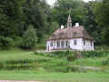
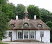
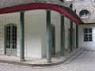
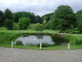
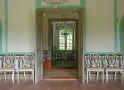
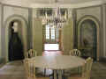
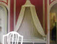
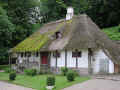
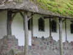
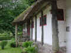

M�n








Liselund was built in 1792-93 by
the district governor Antoine de la Calmette working with the architect
Andreas Kirkerup. The large picturesque park surrounding it was created at
the same time. The place was named after the owner's wife Lisa.
A classical building in romantic clothing. Thatched roof with dormers and
spire. The main facade towards the north has a projecting centrepiece in
the roof supported by four wooden columns on raised steps. On the opposite
side of the house an arcade of marbled wooden columns surrounds the
projecting dining room. The house is symmetrical inside and out in
contrast with the irregularity of the picturesque garden.






View through the house from the
front room to the dining room at the rear, and vice versa. The dining room
has curved niches and pilasters, marbled walls and tiled floor. The
furniture and fittings are original.
Lisa's Room with draped sofa in an alcove, red and pink walls, and trompe
d'oeil painting on either side.
The furnishing and decoration of the house was by the Court decorator J.C.
Lillie.






"The Swiss Hut" near the entrance to the park. Half-timbered walls on a stone boulder foundation. It is reported that Hans Christian Andersen stayed here and that the view from his window of an old hollow tree inspired his story "The Tinder Box".